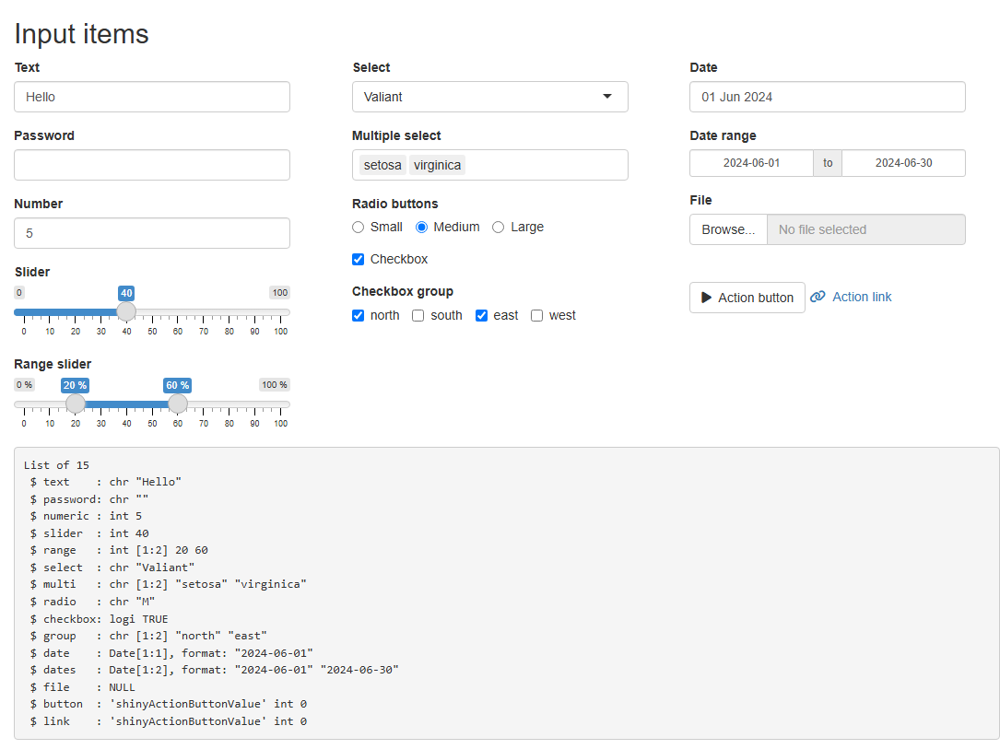
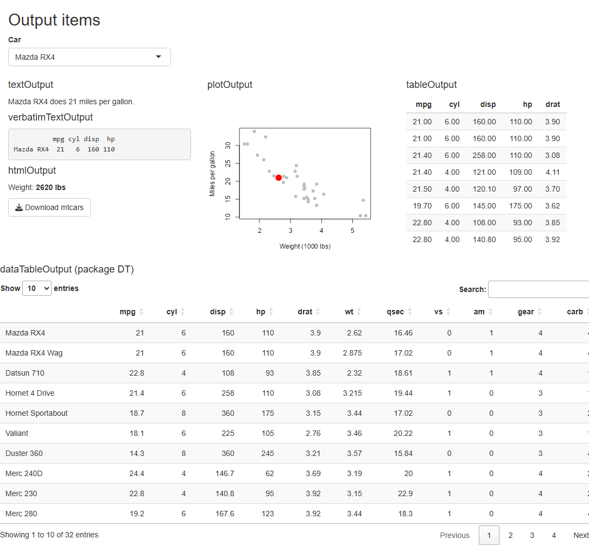
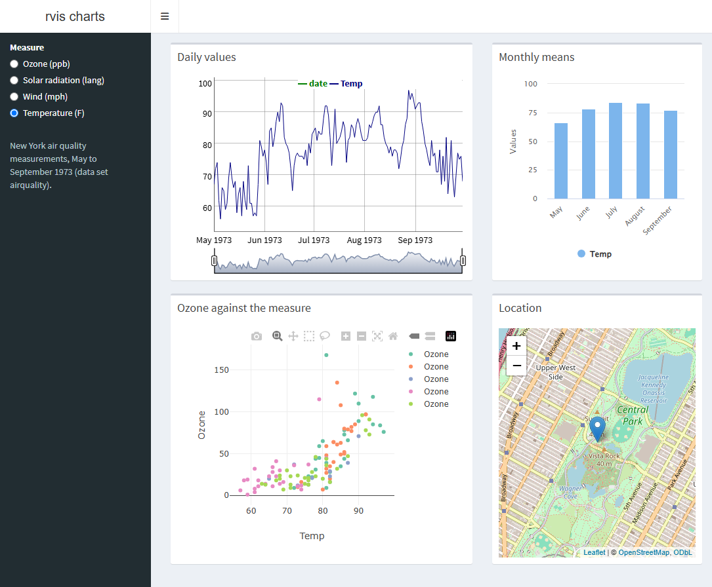
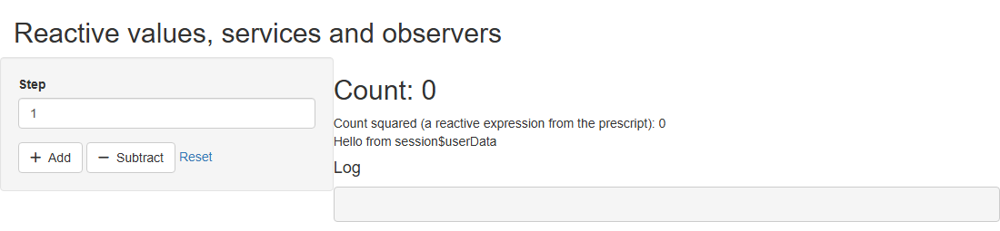
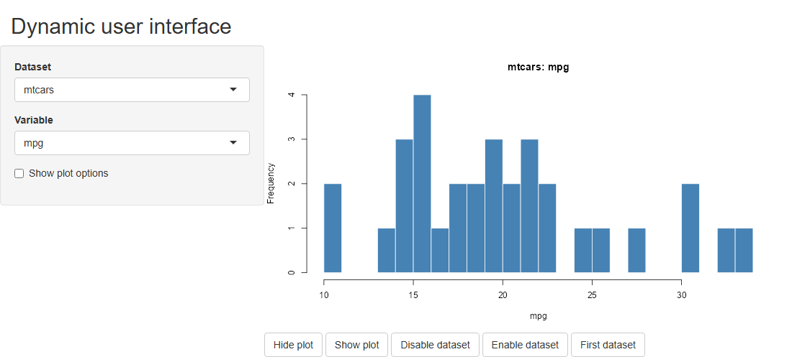
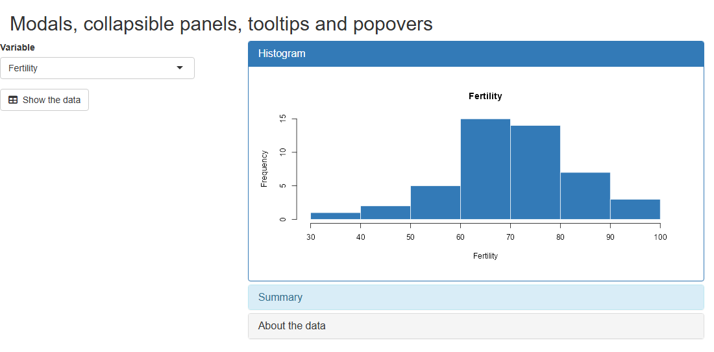
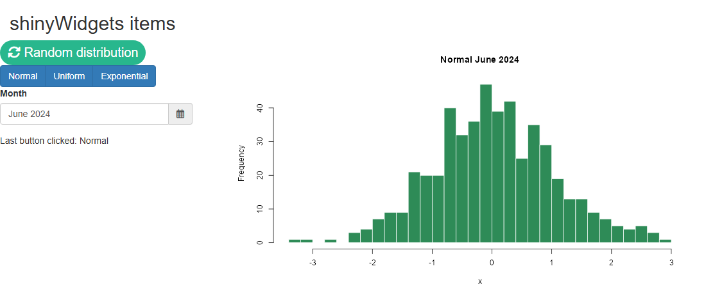
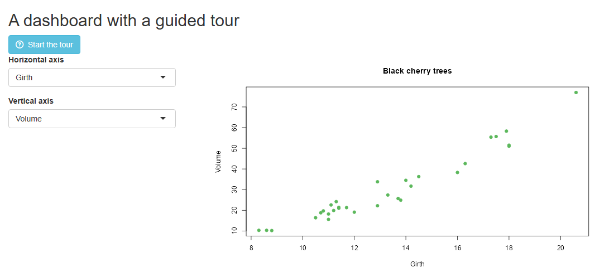
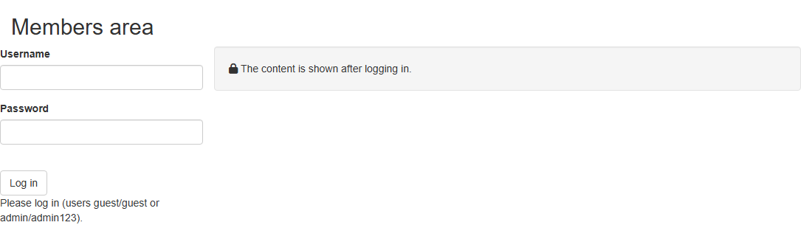
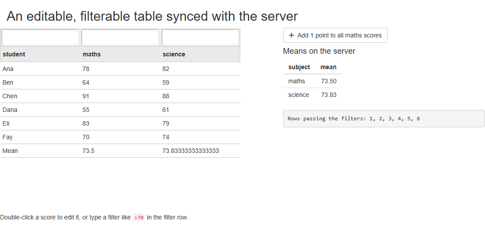

This reference lists every item type of a dashboard and its settings,
the server environment of the services, and the special features:
reactive values, dynamic interfaces, tooltips and popovers, modal
windows, guided tours, login and synced tables. Each feature has an
example dashboard that comes with rvis
(runDashboard(rvisDashboardExample("<name>"))).
Containers and clothes are described in Layouts.
Settings of all items
| Setting | Meaning |
|---|---|
type |
The item type (required). |
title |
Label of an input, title of a container or of the cloth of the item. |
service |
R code: the content of an output, or code run when an input changes. |
weight, offset
|
Width and offset (in 12ths of the row) of the column holding the item, in row/column layouts. |
cloth |
A box, value box, info box, column, well panel or tab panel around the item (clothes). |
tooltip, tooltip.placement,
tooltip.trigger, tooltip.options
|
A tooltip (shinyBS). Placement:
top, bottom (default), left,
right; trigger: hover (default),
focus, click, manual. |
popover, popover.title,
popover.placement, popover.trigger,
popover.options
|
A popover (html allowed). |
tutor.lesson, tutor.step,
tutor.hint
|
A lesson of the guided tour (rintrojs). |
Inputs
The name of an input item is its id
(input$<name>). title is its label. The
service of an input is run (in observeEvent())
when the input changes; with isolate: true it is run in
isolate(). choices and selected
can be vectors or mappings of labels to values.
| Type | Settings |
|---|---|
textInput, passwordInput
|
value, width,
placeholder
|
numericInput |
value, min, max,
step
|
sliderInput |
min, max, value
(two values for a range), step, round,
ticks, sep, pre,
post, animate (true or
!expr animationOptions(...)), dragRange,
timeFormat, timezone, width
|
selectInput |
choices, selected,
multiple, selectize, width
|
radioButtons |
choices, selected,
inline, width
|
checkboxInput |
value, inline,
vertical_align, float
|
checkboxGroupInput |
choices, selected (or
choiceNames and choiceValues),
inline, width
|
dateInput |
value, min, max,
format, startview, weekstart,
language, autoclose,
datesdisabled, daysofweekdisabled,
width
|
dateRangeInput |
start, end, min,
max, format, startview,
weekstart, language, separator,
autoclose, width
|
fileInput |
multiple, accept,
buttonLabel, placeholder,
width
|
actionButton |
icon, class (like
btn-primary), width, inline,
vertical_align, float
|
actionLink |
icon |
actionBttn (shinyWidgets) |
icon, style,
status, size, fullwidth,
no_outline
|
actionGroupButtons (shinyWidgets) |
inputIds, labels,
status, size, inline,
fullwidth
|
airDatepickerInput (shinyWidgets) |
value, min, max,
range, multiple, view,
minView, dateFormat, timePicker,
language, clearButton,
todayButton, autoClose, inline,
… |
Icons are Font
Awesome names, like play.
# All shiny input items, in three columns, and their current values.
name: Input items
layout: page
items:
page:
type: fluidPage
title: Input items
layout:
# first row: three columns (a list of three lists of item names)
- - [text, password, numeric, slider, range]
- [select, multi, radio, checkbox, group]
- [date, dates, file, button, link]
# second row: the values
- [values]
text: {type: textInput, title: Text, value: Hello, placeholder: type something}
password: {type: passwordInput, title: Password}
numeric: {type: numericInput, title: Number, value: 5, min: 0, max: 10, step: 0.5}
slider: {type: sliderInput, title: Slider, min: 0, max: 100, value: 40}
range: {type: sliderInput, title: Range slider, min: 0, max: 100, value: [20, 60], post: " %"}
select:
type: selectInput
title: Select
choices: !expr rownames(mtcars)
selected: Valiant
multi:
type: selectInput
title: Multiple select
choices: [setosa, versicolor, virginica]
selected: [setosa, virginica]
multiple: true
# choices with labels: label -> value
radio:
type: radioButtons
title: Radio buttons
choices: {Small: S, Medium: M, Large: L}
selected: M
inline: true
checkbox: {type: checkboxInput, title: Checkbox, value: true}
group:
type: checkboxGroupInput
title: Checkbox group
choices: [north, south, east, west]
selected: [north, east]
inline: true
date: {type: dateInput, title: Date, value: 2024-06-01, format: dd M yyyy}
dates: {type: dateRangeInput, title: Date range, start: 2024-06-01, end: 2024-06-30}
file: {type: fileInput, title: File, accept: [.csv, .txt]}
button: {type: actionButton, title: Action button, icon: play}
link: {type: actionLink, title: Action link, icon: link}
values:
type: verbatimTextOutput
service: |
ids <- c("text", "password", "numeric", "slider", "range", "select", "multi", "radio",
"checkbox", "group", "date", "dates", "file", "button", "link")
str(setNames(lapply(ids, function(id) input[[id]]), ids))
Outputs
The service of an output is the R code of its render
function: the output is updated when an input or reactive value used by
the service changes.
| Type | Render function | Settings |
|---|---|---|
textOutput |
renderText() |
tag (html tag of the text, like
h3), inline
|
verbatimTextOutput |
renderPrint() |
placeholder |
htmlOutput |
renderUI() |
tag, inline
|
uiOutput |
renderText() (the text is html) |
tag, inline; used for the
value of value box and info box clothes |
dynamicInput |
renderUI() |
inline; the service returns inputs or any
user interface |
plotOutput |
renderPlot() |
width, height,
click, dblclick, hover,
brush (ids of the inputs reporting mouse events),
spinner, spinner.color (shinyWidgets) |
imageOutput |
renderImage() |
deleteFile |
tableOutput |
renderTable() |
striped, hover,
bordered, spacing, width,
align, rownames, colnames,
digits, na
|
dataTableOutput |
DT::renderDataTable() |
width, height,
options (DataTables options) |
valueBoxOutput,
infoBoxOutput
|
renderValueBox(),
renderInfoBox()
|
weight |
downloadButton,
downloadLink
|
downloadHandler() |
title, filename (R code),
class, style; the service writes the content
into file
|
static |
none |
html (html text) or object
(any shiny tag, like !expr hr()) |
# The standard shiny output items. Each output has a service: R code returning its content.
name: Output items
layout: page
items:
page:
type: fluidPage
title: Output items
layout:
- [cars]
- - [text_title, text, verbatim_title, verbatim, html_title, html, download]
- [plot_title, plot]
- [table_title, table]
- [dt_title, dt]
cars:
type: selectInput
title: Car
choices: !expr rownames(mtcars)
text_title: {type: static, html: <h4>textOutput</h4>}
verbatim_title: {type: static, html: <h4>verbatimTextOutput</h4>}
html_title: {type: static, html: <h4>htmlOutput</h4>}
plot_title: {type: static, html: <h4>plotOutput</h4>}
table_title: {type: static, html: <h4>tableOutput</h4>}
dt_title: {type: static, html: <h4>dataTableOutput (package DT)</h4>}
# text
text:
type: textOutput
service: paste(input$cars, "does", mtcars[input$cars, "mpg"], "miles per gallon.")
# printed output
verbatim:
type: verbatimTextOutput
service: mtcars[input$cars, 1:4]
# html (the service returns html tags)
html:
type: htmlOutput
service: tags$p("Weight:", tags$b(mtcars[input$cars, "wt"] * 1000, "lbs"))
# a plot
plot:
type: plotOutput
height: 300px
service: |
plot(mtcars$wt, mtcars$mpg, xlab = "Weight (1000 lbs)", ylab = "Miles per gallon", pch = 19, col = "grey")
points(mtcars[input$cars, "wt"], mtcars[input$cars, "mpg"], pch = 19, col = "red", cex = 2)
# a table, with arguments of renderTable(): striped, hover, digits, ...
table:
type: tableOutput
striped: true
hover: true
digits: 1
service: head(mtcars[order(abs(mtcars$mpg - mtcars[input$cars, "mpg"])), 1:5], 8)
# an interactive table, with DataTables options
dt:
type: dataTableOutput
options: {pageLength: 5}
service: mtcars
# a download button: filename and service are R code; the service writes the file
download:
type: downloadButton
title: Download mtcars
filename: '"mtcars.csv"'
service: write.csv(mtcars, file)
htmlwidgets outputs
These outputs show htmlwidgets made by their service, for example
rvis charts made by rvisPlot(). They have
width and height settings (defaults in
brackets).
| Type | Package | Default size |
|---|---|---|
highcharterOutput |
highcharter | 100%, 400px |
plotlyOutput |
plotly | 100%, 400px |
dygraphOutput |
dygraphs | 100%, 400px |
leafletOutput |
leaflet | 100%, 400px |
amChartsOutput |
rAmCharts | 100%, 400px |
billboarderOutput |
billboarder | 100%, 400px |
c3Output |
c3 | 100%, 100% |
morrisjsOutput |
morrisjs | 100%, 400px |
d3plusOutput |
d3plus | 100%, 500px |
bubblesOutput |
bubbles | 600px, 600px |
sankeyNetworkOutput |
networkD3 | 100%, 500px |
sankeytreeOutput |
sankeytreeR | 100%, 400px |
coffeewheelOutput |
rvis (embedded) | 400, 400 |
grvizOutput |
DiagrammeR (rvis grviz graphs) | 100%, 400px |
wordcloud2Output |
wordcloud2 | 100%, 400px |
sunburstOutput |
sunburstR | 100%, 400px |
upsetjsOutput |
upsetjs | 100%, 500px |
pivotOutput |
rpivotTable | 100%, 500px |
TFD3Output |
rvis (embedded) | 100%, 400px |
d3tfOutput |
D3TableFilter | 100%, 400px |
rHandsonTableOutput |
rhandsontable | 100%, 100% |
gglVisChartOutput |
googleVis | |
rChartsdPlotOutput |
rCharts (dimple) |
# rvis charts in a dashboard: services return rvisPlot() charts (htmlwidgets) shown by the output of their plotter.
# Needs packages dygraphs, highcharter, plotly and leaflet.
name: rvis charts
layout: dash
prescript: |
air <- airquality
air$date <- as.Date(paste(1973, air$Month, air$Day, sep = "-"))
air$month <- month.name[air$Month]
monthly <- aggregate(cbind(Ozone, Solar.R, Wind, Temp) ~ month, data = air, FUN = mean)
monthly <- monthly[order(match(monthly$month, month.name)), ]
items:
dash:
type: dashboardPage
header.title: rvis charts
skin: black
layout.side: [variable, about]
layout.body: [row1, row2]
variable:
type: radioButtons
title: Measure
choices: {Ozone (ppb): Ozone, Solar radiation (lang): Solar.R, Wind (mph): Wind, Temperature (F): Temp}
selected: Temp
about:
type: static
html: <p style="padding:15px; color:#b8c7ce;">New York air quality measurements, May to September 1973 (data set airquality).</p>
row1: {type: fluidPage, layout: [[trend, bars]]}
row2: {type: fluidPage, layout: [[scatter, map]]}
# dygraphs time series
trend:
type: dygraphOutput
height: 300px
service: rvisPlot(type = "tsline", plotter = "dygraphs", obj = air, x = "date", y = input$variable)
cloth: {type: box, title: Daily values, weight: 7}
# highcharter bar chart
bars:
type: highcharterOutput
height: 300px
service: rvisPlot(type = "bar", plotter = "highcharter", obj = monthly, x = "month", y = input$variable)
cloth: {type: box, title: Monthly means, weight: 5}
# plotly scatter chart
scatter:
type: plotlyOutput
height: 350px
service: rvisPlot(type = "scatter", plotter = "plotly", obj = air[!is.na(air[[input$variable]]) & !is.na(air$Ozone), ], x = input$variable, y = "Ozone", color = "month")
cloth: {type: box, title: Ozone against the measure, weight: 7}
# a leaflet map (any htmlwidget made by the service can be shown by its output type)
map:
type: leafletOutput
height: 350px
service: |
leaflet::leaflet() %>%
leaflet::addTiles() %>%
leaflet::addMarkers(lng = -73.97, lat = 40.78, popup = "Central Park, New York")
cloth: {type: box, title: Location, weight: 5}
Any other htmlwidget can be an output with a
package::function type, like
type: echarts4r::echarts4rOutput or
type: apexcharter::apexchartOutput: the item fields are the
arguments of the output function and the service is rendered by the
package’s render function (see any function as an
item).
Clicks on chart items
An htmlwidget output with click.events: true sends
clicks on the items of its chart to the input
<item name>_item_click, which services and observers
can use like any input. Its value is a list with the type
of the clicked item (node, link,
point or element) and, as available, its
id, label, series,
index, value, x, y,
and the source and target of a link. Nodes of
rvis grviz graphs are reported by their key.
This works for Graphviz diagrams (rvis grviz and
DiagrammeR), networkD3, echarts4r, apexcharter, plotly, highcharter,
rAmCharts, c3, billboarder, visNetwork, dygraphs and leaflet charts, DT
tables (a click on a cell gives its row,
column and value) and rvis coffeewheel
sunbursts. The click javascript is added to the chart with
htmlwidgets::onRender() by rvisClickEvents():
the plotting packages are used as they are, so their new versions keep
working. For other widgets, call rvisClickEvents() in the
service with a CSS selector of the clickable elements, for
example
rvisClickEvents(sunburstR::sunburst(data), selector = "path").
# Clicks on chart items as shiny inputs.
# An output with 'click.events: true' sends clicks on the items of its chart (nodes, links, bars, points, ...)
# to input <output name>_item_click: a list with the type, id, label, series, value, ... of the clicked item.
# This works for Graphviz diagrams (rvis grviz and DiagrammeR), networkD3, echarts4r, apexcharter, plotly and
# highcharter charts; see ?rvisClickEvents for other widgets.
name: Click events
layout: page
objects:
network:
nodes: !expr data.frame(id = c('raw', 'clean', 'model', 'report'), label = c('Raw data', 'Cleaning', 'Model', 'Report'))
links: !expr data.frame(source = c('raw', 'clean', 'model', 'clean'), target = c('clean', 'model', 'report', 'report'))
items:
page:
type: fluidPage
title: Click a node, a link or a bar
# a row of two columns (graph and bars), then a row with the clicked items
layout: [[[graph], [bars]], [clicked]]
graph:
type: grvizOutput
height: 350px
weight: 6
click.events: true
service: |
rvisPlot(type = 'graph', plotter = 'grviz', obj = session$userData$network,
key = 'id', label = 'label', source = 'source', target = 'target')
bars:
type: echarts4r::echarts4rOutput
height: 350px
weight: 6
click.events: true
service: |
deaths <- data.frame(age = rownames(VADeaths), VADeaths, check.names = FALSE)
rvisPlot(type = 'bar', plotter = 'echarts', obj = deaths, x = 'age', y = list('Rural Male', 'Urban Male'))
clicked:
type: verbatimTextOutput
service: |
cat('Graph:\n'); str(input$graph_item_click)
cat('\nBars:\n'); str(input$bars_item_click)The interactive charts guide describes the value of the input for each plotter.
Any function as an item
The type of an item (or of its cloth) can
be any function of any package, written as
package::function, like
shinyWidgets::pickerInput, shinydashboard::box
or apexcharter::apexchartOutput. The function is called
with the fields of the item as its arguments, as they are: use the
argument names of the package documentation (for example
label, not title, for the label of
shiny::selectInput). So every function of every package,
including functions added in their future versions, can be a dashboard
item without changes to rvis.
The role of the item is found from the arguments of its function:
-
inputs: functions with argument
inputIdget the item name asinputId. Theirserviceruns when the input changes, andupdateItem4Session()/updateItem()call the package’s update function (fooInputis updated byupdateFooInput). -
outputs: functions with argument
outputIdget the item name asoutputId. Theirserviceis rendered by the package’s render function matching the output function (fooOutputbyrenderFoo). -
containers: all other functions get the items of
their
layoutas unnamed arguments (and the item name asid, if they have an argumentidand the item has none).
A few fields are used by rvis and not passed to the function:
| Field | Use |
|---|---|
args |
unnamed arguments passed first, like the text of
shiny::h3
|
service, layout,
cloth
|
as for all items |
role |
input, output or
container, if the role found from the arguments is
wrong |
render |
render function of an output, like
my.package::renderThing, if it is not named
renderFoo
|
render.args |
list of arguments of the render function |
update |
function updating an input, if it is not named
updateFoo
|
click.events |
for htmlwidget outputs: clicks on chart items as an input |
weight, offset
|
width and offset of the item in a row/column layout; passed to the
function only if it has such an argument (like
shiny::column) |
| tooltip, popover and tutor fields | as for all items |
The short type names of the other sections (like
selectInput or box) keep their own settings,
like title for the label of an input.
# Any function of any package can be an item type: write the type as package::function.
# The item fields are passed to the function as they are (same argument names as in the package documentation).
# - inputs (functions with argument inputId) get the item name as inputId; their service runs when the input changes
# - outputs (functions with argument outputId) get the item name as outputId; their service is rendered by the
# matching render function of the package (fooOutput -> renderFoo) or by the function given in field 'render'
# - containers (all other functions) get the items of their layout as unnamed arguments; field 'args' gives
# unnamed arguments passed first, like the text of a heading
name: Generic item types
layout: page
items:
page:
type: shiny::fluidPage
title: Generic item types
layout: [heading, row]
heading:
type: shiny::h3
args: [Items built by calling package functions directly]
row:
type: shiny::fluidRow
layout: [side, main]
side:
type: shiny::column
width: 4
layout: [dist, n, go]
main:
type: shiny::column
width: 8
layout: [hist, summary]
dist:
type: shiny::selectInput
label: Distribution
choices: {Normal: norm, Uniform: unif, Exponential: exp}
n:
type: shiny::sliderInput
label: Number of observations
min: 10
max: 1000
value: 200
go:
type: shiny::actionButton
label: Reset
icon: !expr shiny::icon('rotate-left')
service: updateItem4Session('n', session, value = 200)
hist:
type: shiny::plotOutput
height: 300px
# a generic cloth: the output is passed (last) to the cloth function, with the other cloth fields as arguments
cloth: {type: shiny::wellPanel}
service: |
x <- switch(input$dist, norm = rnorm(input$n), unif = runif(input$n), exp = rexp(input$n))
hist(x, col = '#75AADB', border = 'white', main = paste(input$n, input$dist, 'values'))
summary:
type: shiny::verbatimTextOutput
service: summary(switch(input$dist, norm = rnorm(input$n), unif = runif(input$n), exp = rexp(input$n)))Reactive values, objects and observers
-
valuesgives the initial values of the reactive listsyncof each session. Outputs usingsync$<name>are updated when it changes. -
objectsare copied intosession$userDataof each session (not reactive). -
prescriptis run at the start of each session: define reactive expressions, event reactives and functions there. -
observersis a list of R code, each run inobserve(): it is run again when the reactive values it uses change.
# Server-side state: reactive values (sync), session objects, a prescript, input services and observers.
name: Reactive values
layout: page
# objects: copied into session$userData of each session (not reactive)
objects:
step: 1
greeting: Hello from session$userData
# values: initial values of the reactive list 'sync' of each session; outputs using sync$... update when they change
values:
count: 0
log: []
# prescript: run at the start of each session, for example to define reactive expressions and functions
prescript: |
squared <- reactive(sync$count^2)
add_log <- function(text) isolate(sync$log <- head(c(paste(format(Sys.time(), "%H:%M:%S"), text), unlist(sync$log)), 10))
# observers: R code run in observe(): run again whenever a reactive value used in them changes
observers:
- if (sync$count >= 10) showNotification("The count reached 10 or more!", type = "warning")
items:
page:
type: fluidPage
title: Reactive values, services and observers
layout:
- - {weight: 4, items: controls}
- {weight: 8, items: [count_text, squared_text, greeting, log_title, log]}
controls:
type: wellPanel
layout: [step, plus, minus, reset]
step:
type: numericInput
title: Step
value: 1
min: 1
# service of an input: run when the input changes
service: session$userData$step <- input$step
# services of action buttons run when they are clicked
plus:
type: actionButton
title: Add
icon: plus
service: |
sync$count <- sync$count + session$userData$step
add_log(paste("added", session$userData$step))
# isolate: true runs the service in isolate(), so reading reactive values does not create dependencies
isolate: true
minus:
type: actionButton
title: Subtract
icon: minus
isolate: true
service: |
sync$count <- sync$count - session$userData$step
add_log(paste("subtracted", session$userData$step))
reset:
type: actionLink
title: Reset
service: |
sync$count <- 0
add_log("reset")
count_text:
type: textOutput
tag: h2
service: paste("Count:", sync$count)
squared_text:
type: textOutput
service: paste("Count squared (a reactive expression from the prescript):", squared())
greeting:
type: textOutput
service: session$userData$greeting
log_title: {type: static, html: "<h4>Log</h4>"}
log:
type: verbatimTextOutput
placeholder: true
service: cat(unlist(sync$log), sep = "\n")
Dynamic interfaces
- A
dynamicInputshows the inputs (or any interface) returned by its service, for example a selection of the columns of the chosen data set. - A
conditionalPanelshows its items only when its javascriptconditionis true. - Methods
hideItems(),showItems(),disableItems()andenableItems()hide, show, disable or enable items (tab panels too). They use package shinyjs, whose javascript is added to the page when a service, observer or the prescript uses them (or withsettings: {shinyjs: true}). -
updateItem4Session(item, session, ...)updates an input with the shiny update function of its type (updateSelectInput(),updateSliderInput(), …; also the selected tab of a navbar page, navigation list or sidebar menu).updateItem(item, ...)updates it in all open sessions (withsettings: {keepSessions: true}).
# A dynamic user interface: inputs built by the server, conditional panels, hiding/showing and
# enabling/disabling items (package shinyjs) and updating inputs from the server.
name: Dynamic interface
layout: page
items:
page:
type: fluidPage
title: Dynamic user interface
layout:
- - {weight: 4, items: controls}
- {weight: 8, items: [plot, actions]}
controls:
type: wellPanel
layout: [dataset, variable, show_options, options]
dataset:
type: selectInput
title: Dataset
choices: [mtcars, airquality, faithful, trees]
# a dynamic input: its service returns an input built from the current dataset
variable:
type: dynamicInput
service: selectInput("var", "Variable", choices = names(Filter(is.numeric, get(input$dataset))))
show_options:
type: checkboxInput
title: Show plot options
# shown only when the javascript condition is true
options:
type: conditionalPanel
condition: input.show_options == true
layout: [bins, color]
bins: {type: sliderInput, title: Bins, min: 5, max: 50, value: 20}
color: {type: radioButtons, title: Colour, choices: [steelblue, darkorange, seagreen], inline: true}
plot:
type: plotOutput
service: |
req(input$var, input$var %in% names(get(input$dataset)))
x <- get(input$dataset)[[input$var]]
hist(x, breaks = if (is.null(input$bins)) 20 else input$bins, col = if (is.null(input$color)) "steelblue" else input$color,
border = "white", main = paste(input$dataset, input$var, sep = ": "), xlab = input$var)
actions:
type: fluidPage
layout: [[hide, show, disable, enable, first]]
# methods hideItems(), showItems(), disableItems() and enableItems() of the dashboard (the shinyjs
# javascript is added to the page because the services use them)
hide: {type: actionButton, title: Hide plot, service: hideItems("plot")}
show: {type: actionButton, title: Show plot, service: showItems("plot")}
disable: {type: actionButton, title: Disable dataset, service: disableItems("dataset")}
enable: {type: actionButton, title: Enable dataset, service: enableItems("dataset")}
# updateItem4Session() updates an input of the session with the shiny update function of its type
first:
type: actionButton
title: First dataset
service: updateItem4Session("dataset", session, selected = "mtcars")
Modal windows, collapsible panels, tooltips and popovers
These use package shinyBS. A
bsModal opens when its trigger (a button) is
clicked. Modal dialogs can also be shown by a service with
showModal(modalDialog(...)) (example).
# Modal windows, collapsible panels, tooltips and popovers (package shinyBS).
name: Modals and tooltips
layout: page
items:
page:
type: fluidPage
title: Modals, collapsible panels, tooltips and popovers
layout:
- - {weight: 4, items: [variable, open, details]}
- {weight: 8, items: [panels]}
# a tooltip shows when the mouse is over the item
variable:
type: selectInput
title: Variable
choices: !expr names(swiss)
tooltip: Variables of the Swiss fertility and socio-economic indicators (1888)
tooltip.placement: right
open:
type: actionButton
title: Show the data
icon: table
tooltip: Opens a modal window
tooltip.placement: right
# a modal window, opened by the item given as trigger
details:
type: bsModal
title: Swiss provinces
trigger: open
size: large
layout: [swiss_table]
swiss_table:
type: dataTableOutput
options: {pageLength: 8}
service: swiss
# collapsible panels: multiple panels can be open, panel 'Histogram' is open at start
panels:
type: bsCollapse
multiple: true
open: Histogram
layout: [hist_panel, summary_panel, about_panel]
hist_panel: {type: bsCollapsePanel, title: Histogram, style: primary, layout: [hist]}
summary_panel: {type: bsCollapsePanel, title: Summary, style: info, layout: [summary]}
about_panel: {type: bsCollapsePanel, title: About the data, layout: [about]}
# a popover shows a title and content (html allowed) when the mouse is over the item
hist:
type: plotOutput
height: 300px
service: hist(swiss[[input$variable]], col = "#337AB7", border = "white", main = input$variable, xlab = input$variable)
popover: Distribution of the selected variable over the <b>47</b> French-speaking provinces.
popover.title: Histogram
popover.placement: left
summary:
type: verbatimTextOutput
service: summary(swiss[[input$variable]])
about:
type: static
html: <p>Standardized fertility measure and socio-economic indicators for each of 47 French-speaking provinces of Switzerland at about 1888.</p>
shinyWidgets
# Items from package shinyWidgets: styled buttons, button groups, an air date picker and plot spinners.
name: shinyWidgets
layout: page
values:
clicked: Normal
# the buttons of a group are not dashboard items: their events are observed in the prescript
prescript: |
observeEvent(input$normal, sync$clicked <- "Normal")
observeEvent(input$uniform, sync$clicked <- "Uniform")
observeEvent(input$exponential, sync$clicked <- "Exponential")
items:
page:
type: fluidPage
title: shinyWidgets items
layout:
- - {weight: 4, items: [go, group, month, last]}
- {weight: 8, items: plot}
# an action button with a style, a status (colour) and a size
go:
type: actionBttn
title: Random distribution
icon: rotate
style: jelly
status: success
size: md
service: sync$clicked <- sample(c("Normal", "Uniform", "Exponential"), 1)
# a group of action buttons: each button is an input with its own id
group:
type: actionGroupButtons
inputIds: [normal, uniform, exponential]
labels: [Normal, Uniform, Exponential]
status: primary
# a month picker
month:
type: airDatepickerInput
title: Month
value: 2024-06-01
view: months
minView: months
dateFormat: MMMM yyyy
last:
type: textOutput
service: paste("Last button clicked:", sync$clicked)
# a spinner is shown while the plot is computed
plot:
type: plotOutput
spinner: cube-grid
spinner.color: "#2E8B57"
service: |
input$go
Sys.sleep(1)
x <- switch(sync$clicked, "Uniform" = runif(500), "Exponential" = rexp(500), rnorm(500))
hist(x, breaks = 30, col = "#2E8B57", border = "white", main = paste(sync$clicked, format(input$month, "%B %Y")))
Guided tours
Items with a tutor.lesson are steps of a guided tour, in
the order of their tutor.step. A tutorBox is a
container highlighted as a whole. The tour is started by a service
calling rintrojs::introjs(session); the javascript of
rintrojs is added to the page when an item has a lesson.
# A guided tour (package rintrojs): items with a tutor lesson are highlighted one after the other.
name: Guided tour
layout: page
items:
page:
type: fluidPage
title: A dashboard with a guided tour
layout:
- [start]
- - {weight: 4, items: [inputs]}
- {weight: 8, items: [plot]}
# the tour starts when the button is clicked
start:
type: actionButton
title: Start the tour
icon: circle-question
class: btn-info
service: rintrojs::introjs(session, options = list(nextLabel = "Next", prevLabel = "Back", doneLabel = "Done"))
# a tutor box: a container with a lesson for all its items
inputs:
type: tutorBox
tutor.lesson: These inputs choose what the plot shows.
tutor.step: 1
layout: [x, y]
# tutor.lesson: text shown for the item (several lines are joined), tutor.step: its order in the tour
x:
type: selectInput
title: Horizontal axis
choices: !expr names(trees)
selected: Girth
tutor.lesson: Choose the variable of the horizontal axis.
tutor.step: 2
y:
type: selectInput
title: Vertical axis
choices: !expr names(trees)
selected: Volume
tutor.lesson: [Choose the variable of the vertical axis., Volume is the timber volume in cubic feet.]
tutor.step: 3
plot:
type: plotOutput
service: plot(trees[[input$x]], trees[[input$y]], pch = 19, col = "#5CB85C", xlab = input$x, ylab = input$y, main = "Black cherry trees")
tutor.lesson: The plot of the 31 felled black cherry trees.
tutor.step: 4
Login
A loginInput shows a login box
(input$getUser, input$getPass,
input$login), and once the user is logged in, the user name
with a log out link. The users are the row names of the
loginTable (column password), which can be
given as a mapping user: password. sync$user
is the logged in user (NULL otherwise) and
sync$message the last login message.
| Settings | Meaning |
|---|---|
settings: passEncryption |
none (default) or bcrypt
(passwords are hashes from bcrypt::hashpw()). |
settings: saveSession |
If true (default), the session data
(session$userData and sync) of each user is
saved in a file <user>.rds when the user logs out,
and loaded when the user logs in again. |
settings: savePath |
Folder of the saved sessions. |
messages |
initial, loginSuccess,
loginFail and usernameNotFound messages. |
# A login box: content shown only to users of the login table.
# Users: guest (password guest) and admin (password admin123). Passwords can also be bcrypt hashes
# (settings: passEncryption: bcrypt).
name: Login
layout: page
loginTable:
guest: guest
admin: admin123
settings:
# do not save the session data of the users when they log out
saveSession: false
messages:
initial: Please log in (users guest/guest or admin/admin123).
loginFail: Wrong password, please try again.
items:
page:
type: fluidPage
title: Members area
layout:
- - {weight: 3, items: [login, message]}
- {weight: 9, items: [private]}
# a login item shows a login box, then the user name with a log out link
login:
type: loginInput
message:
type: textOutput
service: sync$message
# sync$user is the name of the logged in user (NULL when nobody is logged in)
private:
type: dynamicInput
service: |
if (is.null(sync$user)) {
tags$div(class = "well", icon("lock"), " The content is shown after logging in.")
} else {
tagList(
tags$h3("Welcome", sync$user, "!"),
renderTable(head(chickwts[order(-chickwts$weight), ], if (sync$user == "admin") 20 else 5)),
tags$p(if (sync$user == "admin") "Admins see 20 rows." else "Guests see 5 rows.")
)
}
Synced tables
A TFD3Output (or d3tfOutput) with
sync: true shows the data frame of its data
field, with the settings of its config (see the tables guide). The table is the reactive value
sync$<name>: edits made in the browser change it, and
changes made by the server are sent to the browser.
report$<name>_filtered gives the rows passing the
filters, report$<name>_selected the selected rows and
report$<name>_lastEdits the last edits.
# A synced TFD3 table (embedded in rvis): with sync: true, the table is the reactive value sync$<item name>.
# Cell edits made in the browser update sync$scores, and changes made by the server to sync$scores are
# shown in the browser. Filters and selected rows are reported in report$scores_filtered and report$scores_selected.
name: Synced table
layout: page
items:
page:
type: fluidPage
title: An editable, filterable table synced with the server
layout:
- - {weight: 7, items: [scores, help]}
- {weight: 5, items: [add_point, means_title, means, filtered]}
scores:
type: TFD3Output
sync: true
height: 420px
# the initial table
data: !expr data.frame(student = c("Ana", "Ben", "Chen", "Dana", "Eli", "Fay"), maths = c(78, 64, 91, 55, 83, 70), science = c(82, 59, 88, 61, 79, 74), stringsAsFactors = FALSE)
config:
withRowNames: false
column.editable: {maths: true, science: true}
column.filter.enabled: true
column.footer: {student: Mean, maths: !expr mean, science: !expr mean}
help:
type: static
html: <p>Double-click a score to edit it, or type a filter like <code>>70</code> in the filter row.</p>
# the server changes the synced table: the browser table is updated
add_point:
type: actionButton
title: Add 1 point to all maths scores
icon: plus
service: sync$scores$maths <- pmin(sync$scores$maths + 1, 100)
means_title: {type: static, html: "<h4>Means on the server</h4>"}
means:
type: tableOutput
digits: 1
service: data.frame(subject = c("maths", "science"), mean = c(mean(sync$scores$maths), mean(sync$scores$science)))
filtered:
type: verbatimTextOutput
service: cat("Rows passing the filters:", paste(report$scores_filtered, collapse = ", "))
Methods of a dashboard
| Method | Use |
|---|---|
app(), run(...)
|
The shiny app object; run the app (arguments of
shiny::runApp()). |
dashboard.ui(),
dashboard.server()
|
The user interface and the server function. |
hideItems(...),
showItems(...), disableItems(...),
enableItems(...)
|
In services: hide, show, disable or enable items. |
updateItem4Session(item, session, ...) |
In services: update an input of the session. |
updateItem(item, ...) |
Update an input in all open sessions
(settings: {keepSessions: true}). |
getItemObject(name) |
The user interface object of an input or container item. |